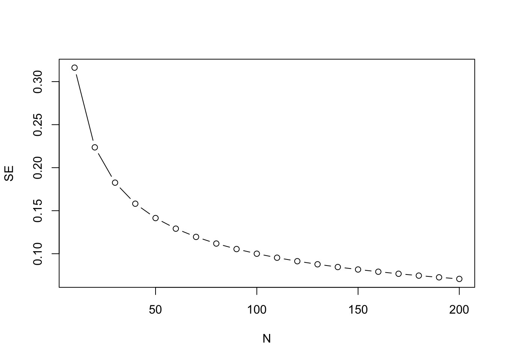

Chapter 10 How big a sample do I need? Sampling, statistical power and type II errors

10.1 Sampling
Consider the following scenario: You have two people who tried a weight loss program, Carbocut, which restricted carbohydrates, and who lost an average of 4 lb over 2 weeks. Another two people just tried sticking to three meals a day (Program 3M). They lost an average of 1 lb over 2 weeks. Would that convince you that carbohydrate restriction is superior? What if we tell you that one person in the Carbocut group lost 6 lb and the other gained 2 lb; in the Program 3M group, one person lost 5 lb and one gained 3 lb. Few people would find this convincing evidence that Carbocut is superior. With only two people per group, the average is quite unstable and highly dependent on the specific people in the group. Things would look more promising if you had 1000 people in each group, and still saw a 4 lb loss vs a 2 lb loss. Individual weights would fluctuate, but the average is a much better indication of what is typical when we have a larger sample, because individual people with extreme scores will have less impact.
How could we know the real truth of just how much weight loss is associated with each diet? In theory, there is a way we could find out - we could recruit every single person in the world who meets some selection criterion for inclusion in the study, and randomly assign them to one or the other diet, and then measure weight loss. Of course, in practice, that is neither possible nor ethical. Rather, the aim of research is to test a group of people whose results can be generalized to the broader population. So we recruit a sample which is intended to represent that much larger population. As the example above demonstrates, we need to think about sample size, as this will affect how much confidence we can place in the estimates from the sample. We know that two people is too small a sample. 1000 seems much better but, outside medical trials, is often too expensive and difficult to achieve. So how do we decide the optimal sample? To answer that question, we first need to introduce the concept of effect size.
10.2 Effect size
Another way of thinking about our first example is that it illustrates that we can’t interpret an average difference between two groups unless we know something about the variation within each group. In the example where we have only two people per group, the variation within each group (8 lb difference between highest and lowest) is far greater than the variation between groups (2 lb).
Figure 10.1: Simulated data comparing two diets with different variances
To give an understanding of effects size, let us first focus on the case where we have three studies each with the same sample size, 20, but where the variability within the sample is different from one study to the next. This is shown in Figure 10.1, where the mean difference in lbs of weight loss between the two diets (represented by the difference in the black horizontal lines) is similar in each case, but the variation within each group (the spread of dots around the line) is greatest in scenario A, and least in scenario C. Relative to the variation within each group, the difference in means is smallest in A, intermediate in B and largest in C. Another way of saying this is that the effect size is different in the three scenarios.
There are various ways of measuring effect size: a simple measure is Cohen’s d, which is the difference between groups measured in standard deviation units. It is computed by dividing the mean difference between groups by the pooled standard deviation. For conditions A, B and C, Cohen’s d is .4, .8 and 1, respectively. Note that in all three scenarios, the distributions of weight loss in the two groups overlap. In every case, there are people in the 3M group with weight loss greater than the mean of the Carbocut group, as well as people in the Carbocut group with less weight loss than the mean of the 3M group. As shown in Figure 10.2, the overlap is related to effect size: the larger the effect size, the less the overlap. It can be sobering to note that for most effective educational and therapeutic interventions, effect sizes are typically no more than .3 or .4. Thus we have to pick out a meaningful signal - an intervention effect - from a very noisy background.

Figure 10.2: Overlap in distributions of scores of two groups for different effect sizes (Cohen’s d)
10.3 Sample size affects accuracy of estimates
Once we have an idea of the likely effect size in our study, we can estimate how big a sample we need. If we have a small effect size, then we need many observations to get a reliable estimate of the true effect of intervention. Figure 10.3 resembles Figure 10.2, but there is an important difference: in Figure 10.3, each blob represents the observed mean from a sample of a given size, taken from a population where the true effect size, shown as a dotted horizontal line, is 0.3.

Figure 10.3: Simulated mean scores from samples of varying size, drawn from populations with either a null effect (pink) or a true effect size, Cohen’s d, of .3 (blue). Power (discussed below) is the probability of obtaining p < .05 on a one-tailed t-test comparing group means for each sample size (From Bishop et al, 2022)
Notice how the observed means jump around from sample to sample when sample size is small, but become more stable once we have 80 or more participants per group. When there are 320 participants per group, the means are estimated pretty accurately and the dots bunch around the mean line for the group, but with 10 per group, it is very unreliable, and in some of our studies the mean of the blue group is lower than the mean of the pink group, which is opposite to what is true in the population.
10.4 Understanding p-values
When we do an intervention study we want to find out whether a given intervention works. The examples above show that it is not enough just to show that the mean outcome for an intervention group is better than for a control group. We need to take the variation around the means into account.
Most studies use an approach known as Null Hypothesis Significance Testing, which gives us a rather roundabout answer to the question. Typically, findings are evaluated in terms of p-values, which tell us what is the probability (p) that our result, or a more extreme one, could have arisen by chance. The lower the p-value, the less likely it is that our result would have occurred if there is no real intervention effect. The way the p-values is calculated assumes certain things hold true about the nature of the data (“model assumptions”): we will say more about this later on, and show how it is important to test assumptions when applying statistical tests, to avoid getting misleading results.
P-values are very often misunderstood, and there are plenty of instances of wrong definitions being given even in textbooks. The p-value is the probability of the observed data or more extreme data, if the null hypothesis is true. It does not tell us the probability of the null hypothesis being true. And it tells us nothing about the alternative hypothesis, i.e., that the intervention works.
An analogy might help here. Suppose you are a jet-setting traveller and you wake up one morning confused about where you are. You wonder if you are in Rio de Janiero - think of that as the null hypothesis. You look out of the window and it is snowing. You decide that it is very unlikely that you are in Rio. You reject the null hypothesis. But it’s not clear where you are. Of course, if you knew for sure that you were either in Reykjavík or Rio, then you could be pretty sure you were in Reykjavík. But suppose it was not snowing. This would not leave you much the wiser.
A mistake often made when interpreting p-values is that people think it tells us something about the probability of a hypothesis being true. That is not the case. There are alternative Bayesian methods that can be used to judge the relatively likelihood of one hypothesis versus another, given some data, but they do not involve p-values.
A low p-value allows us to reject the null hypothesis with a certain degree of confidence, but this does no more than indicate “something is probably going on here - it’s not just random” - or, in the analogy above, “I’m probably not in Rio”.
Criticisms of the use of p-values
There are many criticisms of the use of p-values in science, and a good case can be made for using alternative approaches, notably methods based on Bayes theorem. Our focus here is on Null Hypothesis Significance Testing in part because such a high proportion of studies in the literature use this approach, and it is important to understand p-values in order to evaluate the literature. It has also been argued that p-values are useful provided people understand what they really mean (Lakens, 2021).
One reason why many people object to the use of p-values is that they are typically used to make a binary decision: we either accept or reject the null hypothesis, depending on whether the p-value is less than a certain value. In practice, evidence is graded, and it can be more meaningful to express results in terms of the amount of confidence in alternative interpretations, rather than as a single accept/reject cutoff (Quintana & Williams, 2018).
In practice, p-values are typically used to divide results into “statistically significant” or “non-significant”, depending on whether the p-value is low enough to reject the null hypothesis. We do not defend this practice, which can lead to an all-consuming focus on whether p-values are above or below a cutoff, rather than considering effect sizes and strength of evidence. However, it is important to appreciate how the cutoff approach leads to experimental results falling into 4 possible categories, as shown in Table 10.1.
| Intervention effective | Intervention ineffective | |
|---|---|---|
| Reject Null hypothesis | True Positive | False Positive (Type I error) |
| Do Not Reject Null Hypothesis | False Negative (Type II error) | True Negative |
The Ground truth is the result that we would obtain if we were able to administer the intervention to the whole population - this is of course impossible, but we assume that there is some general truth that we are aiming to discover by running our study on a sample from the population. We can see that if the intervention really is effective, and the evidence leads us to reject the null hypothesis, we have a True Positive, and if the intervention is ineffective and we accept the null hypothesis, we have a True Negative. Our goal is to design our study so as to maximize the chances that our conclusion will be correct, but there two types of outcome that we can never avoid, but which we try to minimize, known as Type I and Type II errors. We will cover Type II errors in this chapter, as these depend crucially on sample size and effect size. Type I errors are covered in Chapter 11.
10.4.1 Type II error
A Type II error is the same as a false negative. It is the error that occurs when the null hypothesis is not rejected but a true effect is actually present. In other words, the data lead us to conclude an intervention doesn’t work when it really does have an effect.
Suppose a researcher wants to test a well-established and frequently-replicated result: children whose parents read to them more frequently obtain better results when they are tested on vocabulary. 20 families are split into two groups; in the first group, parents are encouraged to read with their child each night for 3 months, whereas in the other group no such encouragement is given. The study is run, but when children’s vocabulary results are compared, the statistical test results in a p-value of .233, much greater than the \(\alpha\) level of .05.
The researcher is confused as she knows there is research evidence to indicate that an effect should be present. There are, of course, a number of reasons why the experiment might have turned up a null result, but anyone familiar with statistics will think of the most likely explanation: unfortunately, she has failed to take into account the fact that the effect is fairly small, and to show it convincingly she would need a much larger sample size then 10 families per group.
10.5 Statistical power and \(\beta\)
Statistical power is the probability that a study will show a significant difference on a statistical test when there is a true effect. Statisticians use the term \(\beta\) to refer to the proportion of nonsignificant results that are false negatives (type II error); power is 1-\(\beta\), expressed either as a proportion or a percentage.
In practice, it can get confusing to think about Greek symbols (especially since \(\beta\) has a completely different statistical meaning in the context of regression!) but the main point to grasp is that if I say my study has 40% power, that means that, if there were a true effect of intervention, and I were to run the study 10 times, on only four occasions would I obtain a statistically significant difference.
Power depends on:
- Sample size
- True effect size in the population
- Criterion for statistical significance, also known as the Type 1 error rate (\(\alpha\))
As can be seen from Table 10.2, in general, the larger the sample size, the higher the power, and the greater the effect size, the higher the power. This is a sobering table for fields where it is not uncommon to have sample sizes of 20 or less per group, especially as we know that few effective interventions have effect sizes greater than .4.
| N per group | 0.1 | 0.2 | 0.3 | 0.4 | 0.5 | 0.6 | 0.8 | 1 |
|---|---|---|---|---|---|---|---|---|
| 10 | 0.055 | 0.071 | 0.097 | 0.135 | 0.185 | 0.246 | 0.395 | 0.562 |
| 20 | 0.061 | 0.095 | 0.152 | 0.234 | 0.338 | 0.456 | 0.693 | 0.869 |
| 30 | 0.067 | 0.119 | 0.208 | 0.332 | 0.478 | 0.628 | 0.861 | 0.968 |
| 40 | 0.073 | 0.143 | 0.263 | 0.424 | 0.598 | 0.755 | 0.942 | 0.993 |
| 50 | 0.079 | 0.168 | 0.318 | 0.508 | 0.697 | 0.844 | 0.977 | 0.999 |
| 80 | 0.096 | 0.242 | 0.471 | 0.710 | 0.882 | 0.965 | 0.999 | 1.000 |
| 100 | 0.108 | 0.291 | 0.560 | 0.804 | 0.940 | 0.988 | 1.000 | 1.000 |
| 150 | 0.139 | 0.408 | 0.736 | 0.932 | 0.991 | 0.999 | 1.000 | 1.000 |
| 200 | 0.169 | 0.514 | 0.849 | 0.979 | 0.999 | 1.000 | 1.000 | 1.000 |
We can also show how power is affected by changing the \(\alpha\) level - this affects how large a difference we need to see between groups before we reject the null hypothesis. When \(\alpha\) is more extreme, we will make fewer false positive errors (see Chapter 11), but we will make more false negatives.
Figure 10.4 illustrates this in a simple example using a z-test, which simply assesses how likely it is that a sample came from a population with a given mean. This is not a realistic example, but it is used to give more insight into power. Suppose we have some background information with sets of reading scores from children who did and did not have the intervention. We now have a single child’s score on a reading test, and we want to know whether they had the reading intervention. Figure 10.4 below shows the distribution of scores for children who had no intervention in the top: this is a density plot, showing how common different scores are (proportion of the population is on the y-axis), for each specific score on the x-axis. The shape follows a normal distribution: most scores are in the middle, with higher or lower scores being less common, and the mean is zero and standard deviation is one. The null hypothesis is that the child’s score comes from this distribution.
Figure 10.4: Z test: statistical power, N=1
The lower figure shows the distribution for children who had the reading intervention. The intervention had a large effect (Cohen’s d of one), and so the whole distribution is shifted over to the right. We’re going to use a one-sided z-test, because we know that the child’s score will either come from the null distribution, or from one with a higher mean. We decide to use the conventional level of \(\alpha\) of .05. The vertical dotted line is therefore placed at a point where 5% of the upper distribution (the red area) is to the right of the line, and 95% (the white area) to the left. This point can be worked out from knowledge of the normal distribution and corresponds to a score on the x-axis of 1.65. Our rule is that if the child’s score is greater than 1.65, we reject the null hypothesis. If it is less than 1.65, we can’t reject the null hypothesis. This does not mean that the child definitely came from the non-intervention group - just that the evidence is not sufficient to rule that out. Regardless of the effect size or the sample size, if \(\alpha\) level is set to .05, we wrongly reject the null hypothesis on only 1 in 20 experiments.
But now look down to the lower distribution. False negatives are represented by the blue area to the left of the dotted line: cases where we fail to reject the null hypothesis, but the score really came from the group with intervention. The power of the study corresponds to the yellow region, where we have a score greater than 1.65 and the data really come from the intervention condition. But notice that power is extremely low: the blue area is much bigger than the yellow area. We are much more likely to wrongly retain the null hypothesis than to correctly reject it - even though we have a pretty large effect size. Note that while the false positive rate is kept constant by selection of \(\alpha\) of .05, the false negative result is not.
If we wanted to make the false negative (type II error) rate much lower, we could adopt a less stringent \(\alpha\) level, e.g. we could move the vertical dotted line to the point where the x-axis was zero, so the yellow area becomes much bigger than the blue area. But if we do that, we then would increase the type I (false positive) error rate to 50%!
Our next figure 10.5 presents the same one-sided z test but here the sample size has increased to 10. A key point is that the density plot here does not show the distribution of scores from individual children in any one sample; it is the distribution of means that we would see if we repeatedly took samples of a given size. So if we had a population of 10,000 children, and just kept taking samples of 10 children, each of those samples would have a mean, and it is these that are plotted here. We should notice that two things have appeared to change. First, we see a greater distinction between the two distributions. Second, we see that the critical \(z\) value (vertical dashed line) has changed location. The distributions have not changed their location (the peak of each bell shaped curve is the same), but the spread of each distribution has shrunk as a result of the increased sample size, because the precision of the estimate of the mean improves with a larger sample.
Figure 10.5: Z test: statistical power, N=10
The shaded areas on the density plots directly relate to the concepts outlined above: power, type I, and type II errors. When the sample size increases, the standard error (SE) reduces. We notice that the type I error rate (area in red) is proportionally the same at 5%, but we see a change in the two remaining quantities, power and type II error rate. This is because these quantities are linked. The area under the density curve must always remain at 1, so proportionally, we can calculate the power as 1-\(\beta\). We can visually see this in both figures by looking at the specified areas for the alternative distribution.
If you are finding this all quite confusing, don’t worry. This is complicated and even those who have statistical training can find it challenging (Bishop et al., 2022). The most important points to take away from these examples are that:
- Statistical power depends on the sample size and the effect size, as well as the level of \(\alpha\)
- With small samples, studies often have low power, meaning that even if there is a real effect, there may be little chance of detecting it.
- A p-value greater than .05 does not mean the null hypothesis is true.
It is therefore important to think about power when designing a study, or you may end up concluding an intervention is ineffective, when in fact it has a small effect that your study is underpowered to detect.
Standard error of the mean
It can be challenging to get an intuitive understanding of power, because the computations needed to calculate it are not straightforward. A key statistic is the standard error of the mean, also known as the SEM, usually shortened to standard error (SE). This can be thought of as an index of the variability of an estimate of the mean from a sample. If you imagine taking numerous samples from a population, and estimating the mean from each one, you will end up with a distribution of means, similar to those shown in Figure 10.3. As shown in that Figure, these estimates of the mean are much more variable for small than for large samples. The SE is the standard deviation of the estimates of the mean, and it is crucially dependent on the sample size. This follows from the formula for the SE, which is computed as the SD divided by the square root of N.
The test statistic, z in this instance, which is used to derive a p-value, uses the SE as a denominator, and so will also be influenced by sample size. The z score is defined as:
z = (M - \(\mu\))/SE
The bigger the N, the smaller the SE, the more precise the measurement, and the higher the power of the statistical test. Note that the value entered into these equations is the square root of N. It follows that improvement in precision from adding extra participants to a study is greatest at small sample sizes: as shown in the figure below, the SE is approximately halved in increasing the sample size from 10 to 40, whereas changes are much smaller in going from 110 to 140 participants.

Typically, clinical trials in medicine are designed to achieve 80% statistical power and, depending on the statistical analysis strategy, will employ some method to control type I error rate (traditionally \(\alpha=0.05\)). With \(\alpha\) fixed, power depends on effect size and sample size.
So the first question is how do we select an effect size? This is quite a thorny issue. In the past, it was common just to base anticipated effect sizes on those obtained in previous studies, but these can be overestimates because of publication bias (see Chapter 19). A more logical approach is to consider what is the smallest effect size that would be of interest: for instance, if you have a vocabulary intervention on which children start with a mean score of 20 words (SD of 10) would you be interested in an average improvement on an outcome test of half a word, or would you think the intervention would only be worthwhile if children improved on average by 4 or more words? Lakens (2021) has a useful primer on how to justify a sample size.
Once a suitable effect size is established, then it is possible to compute power for different effect sizes, to work out how big a sample would be needed to attain the desired statistical power, typically set to 80% or more.
10.6 Ways to improve statistical power
Researchers are often shocked when they first do a power analysis, to find that sample sizes that are conventionally used in their field are not adequately powered. Even more depressing, a power analysis may tell you that you would need an unfeasibly large sample in order to show an effect of interest. Researchers who start out planning a study with 20 individuals per group may be discouraged to find that they need 80 per group to do a meaningful study. This is a common predicament, but there are some ways forward:
- If the necessary sample size is too large for you to achieve, it may be worth considering forming a consortium by joining forces with other researchers. Kate Button has advocated for the adoption of “team science” in psychology, recognising that many questions require larger samples than are typically available in any one centre (Button, 2020). A particularly innovative step has been to encourage consortia for undergraduate research projects, which, she argues, not only allows for meaningful research to be done, but also provides much better training in research methods than the conventional set-up, where each student is supposed to do an original piece of research with limited resources (Button, 2018).
- People tend to think that the only way to increase power is by getting a larger sample size, but there are other options. You may be able to improve the effect size of your outcomes by careful consideration of reliability and sensitivity of the outcome measure. Remember, effect size is the difference in means divided by the standard deviation: if you can reduce the standard deviation by minimising random noise in your outcome measure, you will increase the effect size.
- In Chapter 11, we will consider how use of multiple outcome measures can be used to improve statistical power, provided measures are taken to avoid increasing false positives.
- It is worth consulting with a statistician about the optimal research design. A RCT with comparison of intervention and controls groups is not the only possible approach. Some designs are more efficient than others for showing effects of interest: see especially Chapter 17 and Chapter 18.
10.7 Class Exercises
The teaching of statistics is being transformed by the internet. There are some excellent interactive websites to help you gain a more intuitive sense of some of the statistical concepts in this chapter. For starters, we’d recommend this website which focuses on sampling from a normally distributed population. You can vary the mean and standard deviation, as well as the sample size. The examples are from zoology, but the ideas apply much more broadly. This is just one of several apps in a set that is designed to help understand statistics.
There are several interactive websites for calculating power for simple experimental designs. They vary in the level of statistical background that they require, but you should be able to use them to work out the required sample size for different scenarios. Have a look at these sites:
Power Calculator
Cohen’s d
See whether for each site you can understand the graphics, and whether you can work out the answer for the following problems, each of which is just comparing an intervention group and a control group in a two-sided t-test:
- You have an expected effect size of 0.3 and you want to work out the sample size to get power of .8 with \(\alpha\) set to .05.
- You can recruit 50 participants per group; you expect an effect size of 0.3. What is the power to detect this effect, with \(\alpha\) set to .05?
- What effect size would you be able to detect with 80% power and a sample size of 30 per group, with \(\alpha\) set to .05?
More generally, it’s well worth Googling for information if there are statistical terms or concepts you are struggling with. Sometimes the information you find is just confusing and too technical, but, as illustrated above, there are also excellent teaching resources out there.